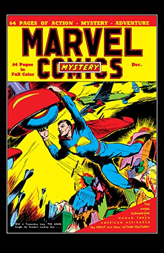
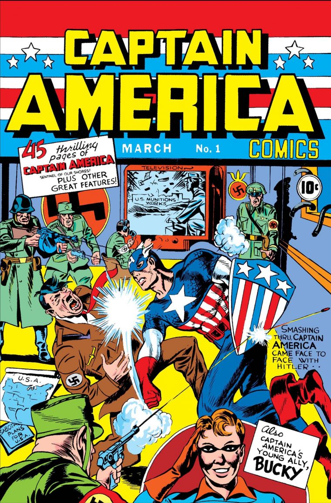
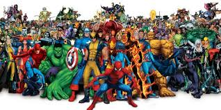

Como tudo começou. Em 1939, a marvel Comics, uma editora norte-americana de mídias relacionadas, surgiu como uma criação de Martin Goodman, com um enfoque direto na criação de histórias em quadrinhos. Entretanto, a companhia nem sempre foi conhecida como Marvel, sendo inicialmente chamada de Timely Comics.
O primeiro editor de quadrinhos da Marvel, o também roteirista e desenhista Joe Simon, se juntou a Jack Kirby, para criar o primeiro herói patriota da história, o Capitão América, em Captain America Comics #1. (Março de 1941). Capitão América logo virou um sucesso, com uma circulação de quase um milhão. Portanto, nos anos 40 a Timely tornou-se muito conhecida.
Nos anos 50, a Marvel atravessou tempos difíceis, da mesma maneira que as outras editoras. Goodman começou a publicar sob o nome de Atlas, uma distribuidora de sua propriedade, em Novembro de 1951. Atlas, ao invés de inovar, seguia as tendências populares na televisão e no cinema - faroestes e dramas de guerra em vigor por um tempo, monstros de cinema drive-in em outro - e mesmo outras revistas em quadrinhos, especialmente a linha de terror da EC Comics.[10] A Atlas também publicou uma infinidade de títulos para crianças e humor adolescente, incluindo Homer the Happy Ghost de Dan DeCarlo (fantasma à la Gasparzinho) e Homer Hooper (adolescente à la Archie Andrews). A editora tentou, sem sucesso, ressuscitar seus super-heróis entre 1953 e 1954, como o Tocha Humana (arte de Syd Shores e Dick Ayers, alternadamente), Namor (quase todas histórias escritas e desenhadas por Bill Everett) e Capitão América (escritor Stan Lee e desenhada John Romita Sr.). A Atlas tinha no mínimo cinco escritores oficiais (chamados oficialmente de editores) além de Stan Lee: Hank Chapman, Paul S. Newman, Don Rico, Carl Wessler e o futuro cartunista da Revista MAD, Al Jaffee. No final dos anos 50 e início dos 60, o sucesso inicial da DC Comics ao reviver o gênero de super-heróis nas histórias em quadrinhos (principalmente com a Liga da Justiça) fez com que a Marvel seguisse o mesmo caminho.[nota 1] Os principais expoentes desta época foram os seus empregados Stan Lee (edição e argumento) e Jack Kirby (arte), responsáveis pela criação do Quarteto Fantástico. A revista foi um enorme sucesso, o que levou a Marvel a publicar outros títulos de super-heróis, entre os quais se destacou a revista do personagem Homem-Aranha, criado por Stan Lee e Steve Ditko. As histórias da Marvel distinguiam-se das demais pelo fato de que o universo em que se desenvolviam possuía características mais próximas da realidade, sendo muito mais humanizado. A Editora explorava a caracterização dos personagens, principalmente em problemas pessoais. Como no grupo X-Men, que surgiu originalmente para tratar-se sobre os preconceitos na época, ilustrados nos mutantes. No caso do Homem-Aranha, ele era um jovem herói com alguma falta de autoestima e muitos problemas mundanos, semelhantes ao de muitos adolescentes. O Demolidor era cego e enfrentava alguns problemas relacionados à sua deficiência física. Este novo olhar acabou por incentivar uma revolução nas histórias em quadrinhos (banda desenhada) estadunidenses com o passar do tempo.
